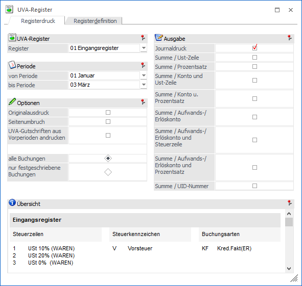
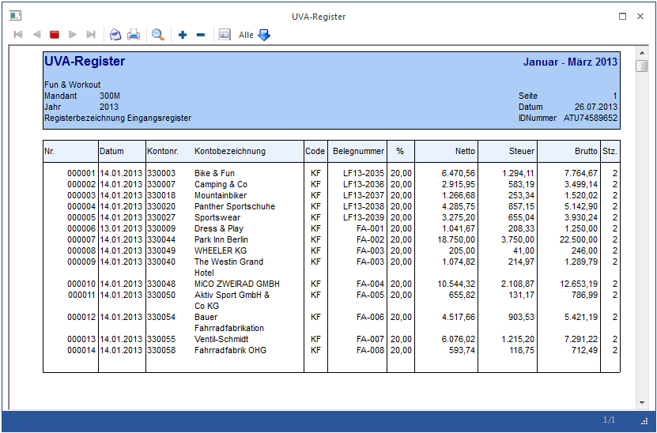
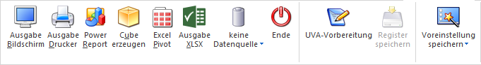

Der Ausdruck des UVA-Registers erfolgt im Menüpunkt
1 Auswertungen
1 Steuermeldungen
1 UVA-Register
1 Register "Registerdruck"

Ø Register
Es muss in der Auswahlbox zunächst eines der bereits definierten Register ausgewählt werden.
Auf der rechten Seite des Fensters erhalten Sie dann als Information die Kriterien dieses Registers (welche Steuerzeilen, Steuercode, Buchungsarten mit diesem Register angesprochen werden).
Ø Periode
Geben Sie hier an, für welche Perioden der Ausdruck erfolgen soll.
Ø Originalausdruck
Wird die Checkbox "Originalausdruck" aktiviert, kann der Druck des UVA-Registers nur auf den Drucker erfolgen.
Beim Druck des Registers werden die einzelnen Zeilen nummeriert. Mit dem Druck des Originalausdruckes werden diese Zeilennummern gespeichert. Bei einem nochmaligen Druck des UVA-Registers wird dann die Zeilennummer automatisch hochgezählt.
Ein Originalausdruck kann nur für eine Periode gedruckt werden.
Ø Seitenumbruch
Wird die Checkbox "Seitenumbruch" aktiviert, so werden eigene Summenblätter gedruckt.
Ø UVA-Gutschriften aus Vorperioden andrucken
Wird diese Checkbox aktiviert, werden bei der Ausgabe die Zahllasten der Vorperioden neu gerechnet und daraus ein eventuelles Guthaben ermittelt. Dieses Guthaben wird Im Summenbereich der Auswertung ausgewiesen.
Beispiel
Januar: Gutschrift 100,-
Februar: Zahllast 80,-
Im Februar wird ausgegeben:
Zahllast: 80,-
Gutschrift: 100,-
zu bezahlen: 0,-
März:
Zahllast 0,-
Gutschrift: 20,-
zu bezahlen: 0,-
April:
Zahllast 30,-
Gutschrift: 20,-
zu bezahlen: 10,-
Die Checkboxen werden pro Register gespeichert.
Ø Alle Buchungen
Alle Buchungen werden (gemäß den sonstigen getroffenen Eingrenzungen) ausgegeben, d.h. wenn in den FIBU-Parametern (WinLine START/Optionen) eingestellt wurde, dass Buchungen - bis zum Zeitpunkt, an dem sie festgeschrieben werden - noch als Stapel geladen und editiert werden können, dann stehen bei dieser Option ALLE Buchungen (die bereits festgeschriebenen UND die noch vorläufigen Buchungen) für die Ausgabe zur Verfügung.
Ø Nur festgeschriebene Buchungen
Bei dieser Einstellung werden nur DIE Buchungen ausgegeben, die bereits im Menüpunkt
1 Buchen
1 Buchen
1 Buchungen festschreiben
als "definitiv" gekennzeichnet worden sind.
Ausgabe
Sie haben weiters die Möglichkeit, durch Aktivieren der Checkbox, folgende Informationen bzw. Summen anzudrucken:
ü Journaldruck
ü Summe / USt-Zeile
ü Summe / Prozentsatz
ü Summe / Konto u. USt-Zeile
ü Summe / Konto u. Prozentsatz
ü Summe / Aufwands- /Erlöskonto
ü Summe / Aufwands- /Erlöskonto und Steuerzeile
ü Summe / Aufwands- /Erlöskonto und Prozentsatz
ü Summe / UID-Nummer

Buttons

Ø Ausgabe Bildschirm (Registerdruck)
Das gewählte Register kann entweder am Bildschirm oder Drucker ausgegeben werden. Weiters kann ein Cube erzeugt oder eine BI-Ausgabe erstellt werden. Mit Drücken der F5-Taste wird die standardmäßige Bildschirmansicht ausgegeben.
Ø Ausgabe Drucker
Durch Anwahl des Buttons "Ausgabe Drucker" wird die Auswertung am Drucker ausgegeben.
Hinweis
Beim Ausdruck wird standardmäßig das Formular P01W305R verwendet. Dieses Formular kann aber abhängig von der Registernummer übersteuert werden. D.h. es kann ein Formular mit dem Namen P01W305R+Registernummer angesprochen werden.
Ø Power Report
Durch Drücken des Buttons "Power Report" wird die Auswertung auf Basis von Cube-Daten grafisch dargestellt. Die Ausgabe ist individuell anpassbar und erfolgt in der Form von "Widgets", die unterschiedlichsten Darstellungen ermöglichen.
Ø Cube erzeugen
Wenn die Option "Cube erzeugen" gewählt wird (nur möglich, wenn auch die entsprechende Lizenz dafür vorhanden ist), dann wird das UVA-Register im "Olap Viewer" angezeigt. In diesem können die Daten nach verschiedenen Gesichtspunkten ausgewertet werden.
Ø Excel Pivot
Durch Anwahl des Buttons "Excel Pivot" werden die selektierten Zeilen in Form einer Pivot Ausgabe in Microsoft Excel (2007 oder höher) angezeigt.
Ø Ausgabe XSLX
Mit Hilfe des Buttons "Ausgabe XLSX" wird die Auswertung mit den von Ihnen definierten Selektionen an Microsoft Excel übergeben
Ø Datenquelle
Mit Hilfe dieser Auswahl kann definiert werden, ob und wie eine Datenquelle (d.h. ein Snapshot oder eine MasterView) verwendet werden soll.
ü Keine Datenquelle
Bei Auswahl
von "keine Datenquelle" wird keine zuvor angelegte Datenquelle genutzt. D.h. die
Daten werden von der WinLine "live" ermittelt und in der gewünschten Form
ausgegeben.
Hinweis
Da die BI-Ausgabe (z.B. Cube oder Power Report) immer eine Datenquelle benötigt, wird im Hintergrund eine temporäre Datenquelle (Snapshot) gebildet.
ü Datenquelle
erstellen/aktualisieren
Die Daten werden zur Laufzeit ermittelt und an einen
zu definierenden Snapshot übergeben. Nach dem Füllen der Datenquelle wird die
gewünschte Ausgabevariante über die Datenquelle erzeugt. Dieser Vorgang kann mit
einer Zeitverzögerung verbunden sein, da die Daten zusätzlich gespeichert werden
müssen.
ü Datenquelle verwenden
Bei der
Verwendung eines Snapshots werden die Daten direkt aus der Datenquelle gelesen,
d.h. die für die Ausgabe benötigten Daten können ohne Verzögerung in der
gewünschten Variante ausgegeben werden.
Wird hingegen eine MasterView
gewählt, so werden die Daten für die Ausgabe "live" ermittelt, wobei diese so
aktuell sind wie die zugrunde liegenden Datenquellen.
Hinweis
Der Button "Datenquelle verwenden" wird nur angeboten, wenn für diesen Bereich (bezogen auf den aktuellen Benutzer / Mandanten) zumindest eine private oder öffentliche Datenquelle existiert. Des Weiteren stehen nur die Ausgabevarianten "Power Report", "Cube erzeugen", "Excel Pivot" und "Ausgabe XLSX" zur Verfügung.
Hinweis
Weitere Informationen zum Thema "Datenquellen" entnehmen Sie bitte dem Kapitel "Die Datenquelle".
Ø Ende
Der Programmteil wird verlassen, ohne dass eventuelle Veränderungen abgespeichert werden.
Ø UVA-Vorbereitung
Mit diesem Button wechseln Sie ins Menü "UVA-Vorbereitung". Die Vorbereitung des UVA-Registers ist notwendig für die Zusammenführung von Erlöskonten (bei denen die Steuer hinterlegt ist) und den Personenkonten, im Falle einer unechten Splitbuchung.
Ø Voreinstellung speichern
Durch Anwahl dieses Buttons erfolgt eine benutzerspezifische Speicherung aller im Fenster getätigten Einstellungen. Diese sogenannten "Voreinstellungen" können jederzeit wieder abgerufen werden und ermöglichen dadurch ein schnelleres und zielorientierteres Arbeiten (nähere Informationen entnehmen Sie bitte dem Kapitel "Die Voreinstellungen").